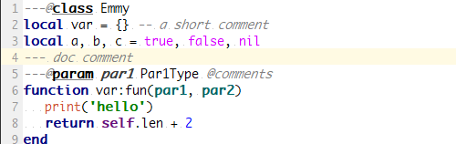
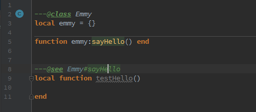
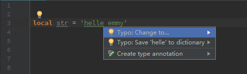
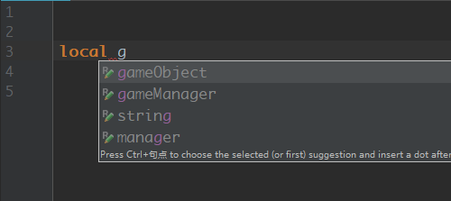
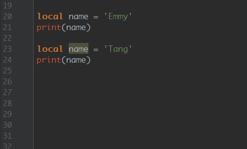

1.2.0 ( 59f09a9 )
1.2.0b2 ( 59f09a9 )
[CHANGE]
nil/true/false在Default的默认颜色改变[Experimental] 类型检查，对函数调用、函数内返回值、变量赋值等进行类型检查（实验性质）。需在
Settings - Editor - Inspections - Lua > Lint > Type safety中开启，默认关闭。（感谢来自 @Perry van Wesel 的贡献）[NEW] 新注释
@see[NEW] 拼写检查(spell checker support)
[IMPROVE] Structure view 完善（感谢来自 @Marco Qualizza 的贡献）
[IMPROVE] 支持类字段方法
public/private/proected修饰[IMPROVE] lua解析性能优化
[IMPROVE] 完善快速文档
[FIX] 修复 issue 63
[FIX] 修复 issue 66
[FIX] 修复 issue 69
1.2.0b1 ( 0be9824 )
[NEW] 面包屑（Breadcrumbs info）功能

[NEW] 变量名建议
[IMPROVE] Structure View树形节点显示（感谢来自 @Marco Qualizza 的贡献）

[IMPROVE] 颜色设置界面（Color settings page）提供更多的配置项
[IMPROVE] 优化重命名建议

[IMPROVE] 文档注释支持
Markdown语法
[IMPROVE] 优化在文件出现的单词(
Words in file)的提示，文本以及注释中出现的词都将提示[NEW] 变量同名警告提供修复
[FIX] 修复 issue 54
[FIX] 修复 issue 55 注解类型可用
()包围